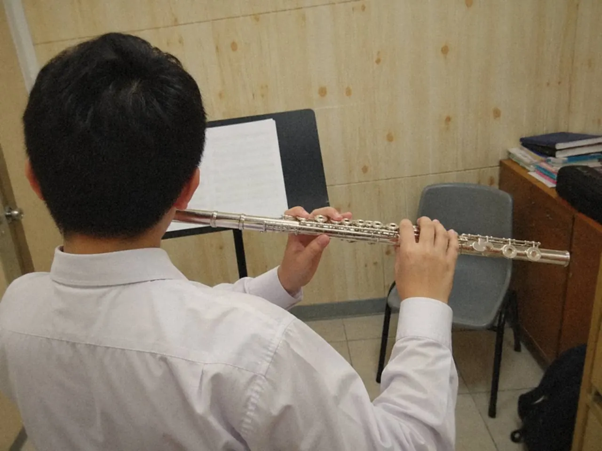
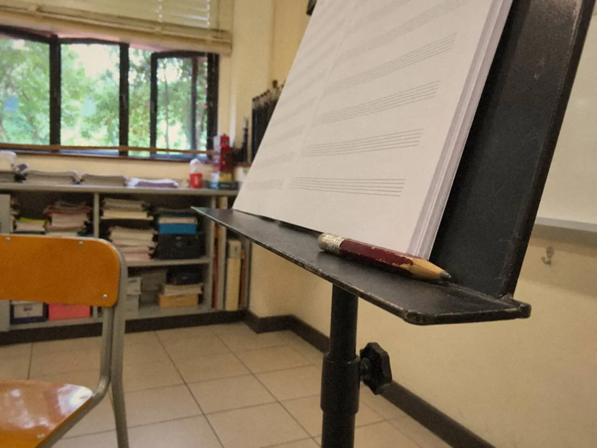

長笛的呼吸要練兩件事：氣流穩定，以及換氣位早有安排。支撐不等於鎖緊腹部，吸得越滿也不等於越好。氣流穩了，再按旋律在譜上定好換氣位，樂句就不用靠硬撐。

旋律吹到一半，氣快用完，眼睛才開始找地方停。這一刻最緊張，也是最不適合做決定的時候。
支撐不是鎖緊腹部
學生常把大聲和用力混在一起，音色反而變硬。問題未必是氣不夠。
先自然吸氣，用舒服的長度吹一個音，看兩個地方：肩膊有沒有抬高，喉部有沒有用力。

注意力放在氣流能否穩定維持。用身體某一處的僵硬去換音量，換來的聲音通常又硬又累。感到不適便停下來重新調整。
檢查時用短音、長音和換氣位置，每次只聽一個問題。一邊改嘴形一邊改速度，到頭來不知道是哪一項起了作用。
四拍吹、四拍休息，聽甚麼？
慢吸、穩吐，吹四拍，再休息四拍。留意第四拍是否仍有音色。
句尾總要靠擠壓才完成，就把長度縮短。一出聲便僵硬，就用較自然的音量重新開始。
錄下來，比較同一個音的起點、中段和結尾。不必一次追求最長的氣息，多吹幾拍若換來緊繃的喉嚨，這幾拍不划算。
換氣位怎樣定？
先看旋律結構，再按目前的氣息能力調整。
學生常在沒有意義的位置吸氣，旋律便斷開。換氣像文章的標點，放對了，聽的人跟得上句子。
離開樂器，用不費力的聲音把旋律唱一次，不必唱得漂亮。留意哪個音像一句話的重點，哪裏像答完一句。句尾、重音和和聲轉折，都是可以先標出來的位置。
相同長度的兩句，未必適合在相同位置吸氣。有些地方正走向高點，有些地方已經收束。比較兩種唱法：在重點前停一次，和在句尾停一次，意思有甚麼不同？
在譜上畫一個逗號
用鉛筆把可能的換氣位圈起來，寫成逗號。呼吸記號記錄身體的需要，也交代音樂怎樣說話。

理想的句子太長，初學者可以先設暫時的換氣位。有意識地安排，讓前一個音收得完整，就已經比憋氣好。不要為了模仿錄音裏的長句而憋住呼吸，令後半句只剩勉強。
接下來練接縫：
- 抽出換氣前兩拍和後兩拍，連同吸氣動作一起練，保留原來的拍子
- 把換氣前的末音和下一句首音單獨連起來
- 留意吸氣時肩膊有沒有突然抬高，重新起音有沒有因為追拍而過硬
- 確認吸氣後能立即回到聲音和拍子
很多斷裂出現在吸氣之後：重新找吹口，或者手指還未準備好。吸氣長一點，通常不是主因。
接縫不自然，就把樂句切短，先讓接縫順，再延長前面的旋律。
怎樣知道樂句連貫了？
回到樂曲，揀一個原本要勉強才完成的短句，提前安排換氣。
錄下同一句的兩個版本，一個照舊習慣，一個照新記號。回聽時別只問吸氣快不快，也聽句尾是否完整、下一句有沒有方向、旋律是否仍往前走。吸氣短了，音頭卻吹得很硬，還不能算改善。
呼吸練習的成果，要在旋律更連貫、身體更自在時聽得見。拍數多了幾拍，只是其中一個數字。
常見問題
吹長笛要吸得很滿嗎？
不用。先自然吸氣，吹舒服的長度。吸得過滿，肩膊和喉部反而容易緊。
氣不夠長，可以多加換氣位嗎？
可以。初學者先設暫時的換氣位，只要位置有意識，前一個音收得完整。氣息長了再調整。
吸氣時聲音很大怎麼辦？
先查肩膊有沒有抬高，再練換氣前後兩拍的接縫，目標是吸得安靜，又能立即回到拍子。
揀一句常常斷開的旋律，先唱一次，用鉛筆畫一個逗號，再拿起長笛。練長音時想有固定的拍子，可以開長音練習；氣流穩了，再讀長笛音色：從起音到收音。